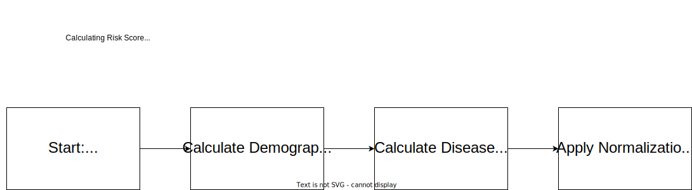
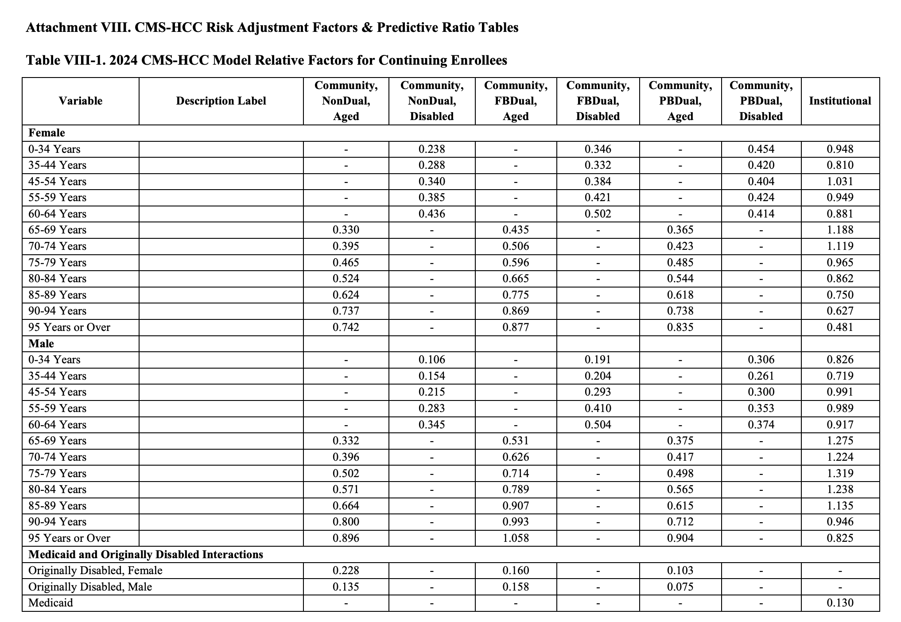
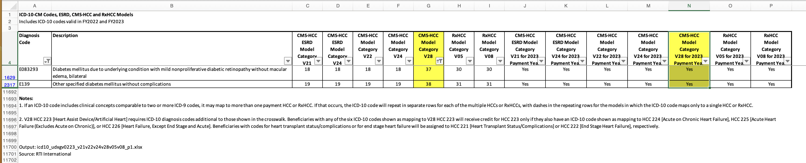
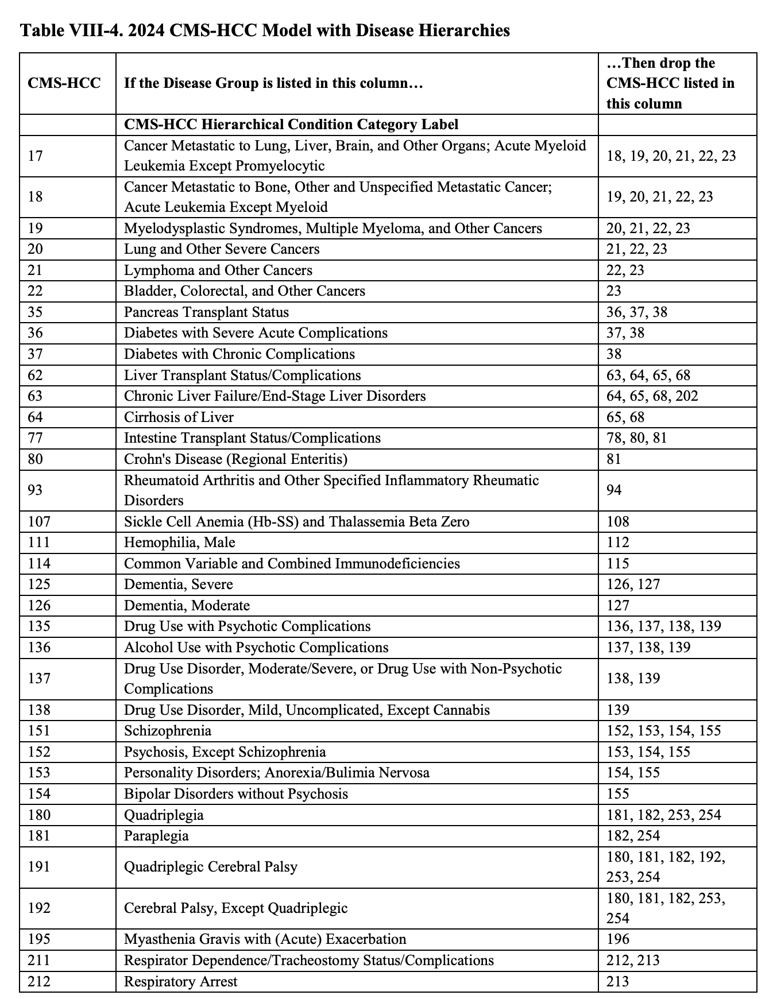
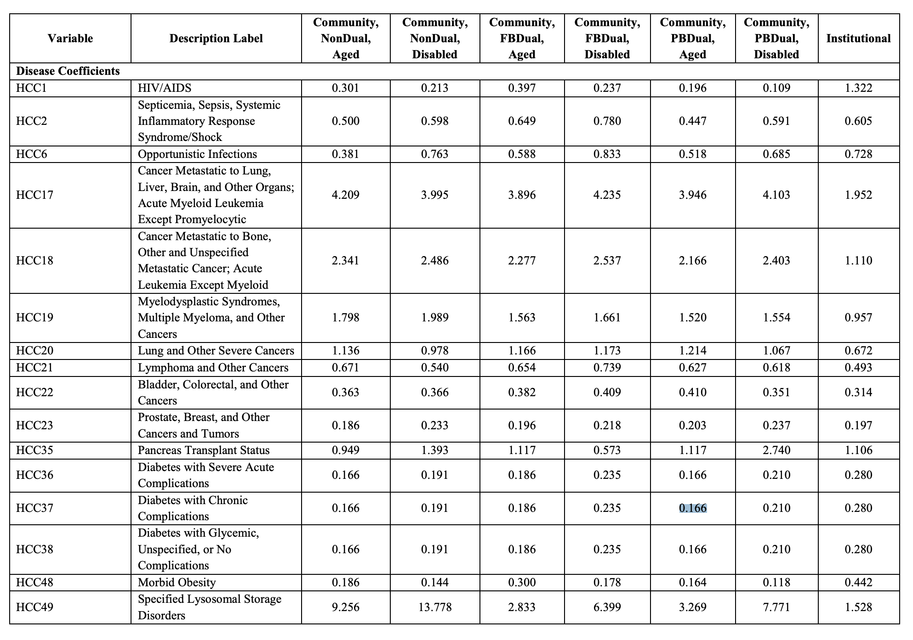
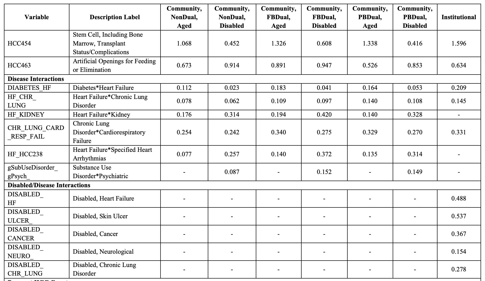
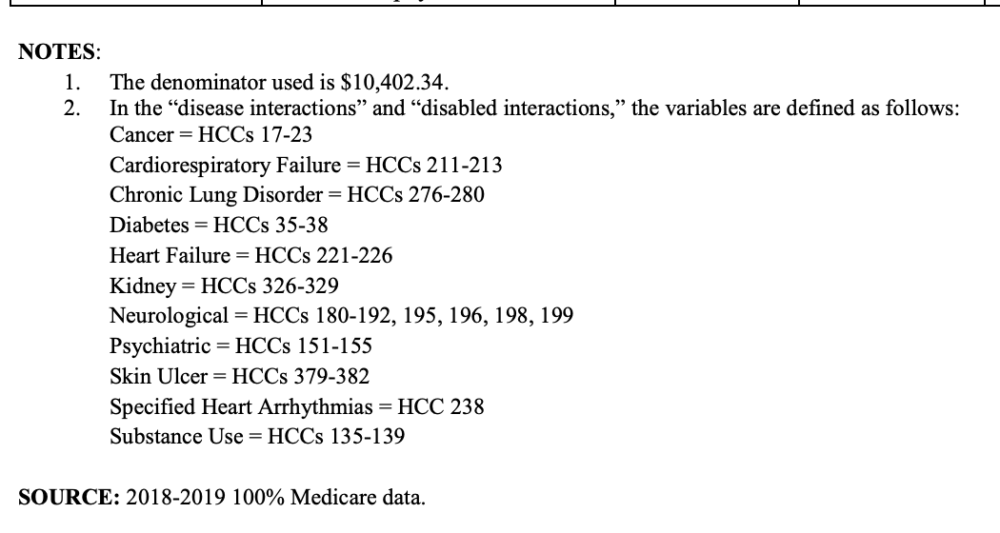
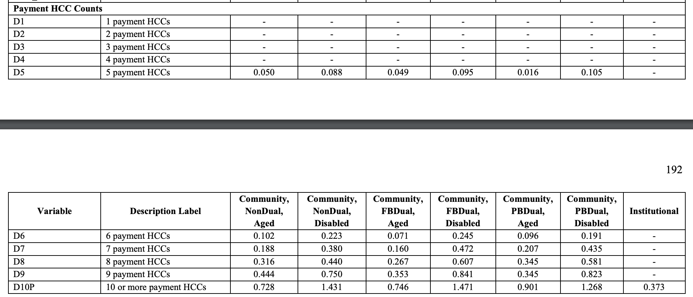

10 Risk Adjustment
10.1 What is risk adjustment?
Risk adjustment was developed and created to dissuade payers from selectively enrolling patients who are healthy into health plans and make sure payers are compensated fairly for the illness burden of patients. Risk adjustment models are used to calculate payments to healthcare organizations for patients insured by: * Medicare Advantage * Accountable Care Organizations * Most Affordable Care Act plans. [1]
At a high level, if a patient is sicker or has higher predicted medical cost, the payer insuring that patient will be compensated more.
A Risk Adjustment Factor Score (“RAF score”) is a measure of the estimated cost of an individual’s care based on demographic factors such as age and gender and their associated disease factors (how costly/sick is the individual patient). This RAF score is then used to calculate payments or reimbursements to these organizations.
There are multiple risk adjustment models that exist for both Medicare patients and commercial patients. The most common risk adjustment models are:
- HHS-HCC
- CMS-HCC NON-ESRD
- CMS-HCC ESRD
- RxHCC
- PACE [2]
Each risk adjustment model has in common that it tries to predict medical expense using demographic information and disease factors for patients.
10.2 What are HCCs?
“HCC” stands for Hierarchical Condition Categories. They are sets of medical codes linked to clinical diagnoses that aim to predict cost for acute and chronic health conditions. HCC coding relies on ICD-10-CM coding to assign risk scores to patients. Not all risk adjustment models have to use HCCs, but almost all do.
10.3 Comparison between HHS-HCC and CMS-HCC
One way to separate HHS and CMS HCC models would be to call them respectively “commercial risk adjustment” (HHS) and “Medicare risk adjustment” (CMS). These two main models are similar but are separate:
| CMS-HCC Model | HHS-HCC Model |
|---|---|
| Used for Medicare | Used for Affordable Healthcare Act (ACA) plans |
| Base year informs next year’s payment | Current year diagnoses inform current year payment |
| Focused on patients 65 and older, but can include younger disabled population | Focused on all ages |
| Drug costs are carved out in separate model | Drug costs are included |
| Has distinct model and break out for ESRD patients | Does not carve out ESRD in separate risk adjustment model |
| Is not a zero-sum payment system | Is zero-sum between payers that participate in ACA |
| Has Normalization Factor and Coding Pattern Difference Adjustment | Has final adjustment for CSR benefit curve and utilization differences |
10.4 FAQ
10.4.0.1 What does zero-sum mean?
Zero-sum in the context of commercial risk adjustment (HHS-HCC Model) means that there is no government subsidization for private companies in the risk adjustment process. If the illness burden of a state in total increases from the prior year, the government provides no additional funds. What happens during reconciliation is some health insurance companies will have to pay into a pool because they have healthier than average patients. Some organizations will get paid out from that pool because they have sicker than average patients. The total transfer of dollars adds up to $0.
10.4.0.2 If risk scores inform payments, how are risk scores checked to make sure they are not overinflated?
Both HHS-HCC and CMS-HCC models go through a validation process which is called “Risk Adjustment Data Validation” (aka RADV). The RADV processes and procedures are different for different risk adjustment models.
10.4.0.3 Can you compare risk scores between years to see the illness burden of a patient change over time?
This can be done, but is not recommended, especially if using different risk adjustment models between different years. There may be other models that can more accurately reflect illness burden, and risk adjustment is mainly focused on predicted medical expenditure. These two things are correlated, but not necessarily the same.
10.4.1 Footnotes
[1] ACA health plans that are not subject to risk adjustment are Grandfathered plans, Short-term, limited-duration plans, Health Reimbursement Arrangements (HRAs), and plans offered by states that have received a waiver from HHS.
[2] Program of All Inclusive Care for the Elderly
10.5 CMS Risk Score Models
CMS has implemented multiple models to address differences in program costs and the beneficiary population. For example, Medicare Part C versus Medicare Part D plans, the ESRD population (End-Stage Renal Disease) versus members without ESRD, or members enrolled in the Program of All Inclusive Care for the Elderly (PACE). CMS also segments each model, creating subpopulations with distinct cost patterns, such as dual enrollment in Medicaid or living in the community versus an institution.
The full list of models are:
- CMS-HCC
- CMS-HCC-ESRD
- PACE
- RxHCC
In addition to models for different populations, CMS has released versions of these models over the years, which include new HCC mappings and added or removed ICD-10-CM codes. Version 24 has been in use since 2020. Version 28 will be phased in over a three-year period starting in 2024.
- Payment year 2024 risk scores will be blended using 67% of the risk score calculated from v24 and 33% from v28.
- Payment year 2025 risk scores will be blended using 33% of the risk score calculated from v24 and 67% from v28.
- Beginning in payment year 2026 risk scores will be 100% from v28.
CMS also performs model calibration based on diagnostic and expenditure data. These changes can be found in the annual rate announcements on cms.gov.
These models generate risk scores by adding relative risk factors, demographics, and disease information. Additionally, they use hierarchies where the most severe manifestation of a condition is considered for risk scores.
10.6 Risk Score Calculation
Several resources are needed to calculate risk scores.
- Annual Rate Announcements for the applicable payment year (found on cms.gov)
- ICD-10-CM to HCC mapping (found on cms.gov)
- Risk adjustment model software (CMS makes a SAS program available on cms.gov)
- Model Output Report (MOR) or claims data
- Monthly Membership Detail Report or eligibility data
Once you have gathered the resources needed to calculate risk scores, you can begin identifying and calculating scores for your patients. A brief overview of the steps:
- Identify demographic and enrollment information for each patient and cross-reference the risk factor value from the appropriate payment year’s rate announcement document.
- Identify disease information for each patient, apply the condition hierarchy, and cross-reference the risk factor value from the appropriate payment year’s rate announcement document.
- Identify additional relative and adjustment factors, such as disease and disabled interactions, and total HCC counts per patient, and cross-reference the risk factor value from the appropriate payment year’s rate announcement document.
- Calculate the raw risk scores for each patient, then apply the normalization factors and the MA coding pattern adjustment factors from the appropriate payment year’s rate announcement document to calculate the normalized and payment risk scores.
10.7 CMS Risk Adjustment Files
The Monthly Membership Detail Report (MMR) and Model Output Report (MOR) are two types of files that CMS sends to Medicare Advantage organizations (MAOs). The files, in additional to other resources from CMS, are used to calculate the CMS HCC risk adjustment factor (RAF) scores.
CMS shares these files through the Medicare Advantage Prescription Drug (MARx) system and through the Health Plan Management System (HPMS).
MAOs can refer to the Plan Communications User Guide (PCUG) for additional details on the files exchanged through the MARx system.
10.7.1 Monthly Membership Detail Report (MMR)
The MMRs contain member eligibility, risk scores, and prospective payments the MAO receives for each member in the upcoming month. They also contain retroactive adjustments to prior months’ records. This file contains the data for both Part C and Part D members. The key pieces of data to get from the MMR are:
- Eligibility: Understanding eligibility is a pre-requisite for modeling risk adjustment. The MMR has very detailed information regarding eligibility, including retrospective enrollments and disenrollment data. Just because a member exists in the MMR file, does not mean that they are eligible and should be included in risk adjustment.
- Segment / Risk Model: Depending on the risk adjustment model being used (most commonly v24 and v28), different co-efficients are used for the member based on if they are newly enrolled, are dual status, and their medicare status code. This information needs to be gathered from the MMR to calculate risk adjustment
- Risk Scores: The MMR will also disclose risk scores for a patient but only for certain time periods (start of the year, mid-year, and final). This can be used to understand funded premium, or validate calculated risk scores.
10.7.2 MAO-004
Not all medical claims are eligible for documenting HCCs for medicare risk adjustment. To address this, CMS provides a report called the MAO-004 which will inform Medicare Advantage organizations if a given diagnosis code submitted is eligible for risk adjustment. This file can be helpful for tying out risk score calculations to the MMR.
10.7.3 Model Output Report (MOR)
Similar to MMRs, the MORs contain a record for each member. That record shows the Hierarchical Condition Codes (HCCs) for each member used by the Risk Adjustment System (RAS) to calculate Part C or Part D risk adjustment factors for each beneficiary. There are two varieties of MORs, for Parts C and D respectively, as each uses different models.
In addition to these monthly files, CMS issues “final” MORs once per year with updated information after the year has ended, and planned runout data has been collected.
10.8 Sample Risk Score Calculation of a single patient
Let’s walk through a single example with a single patient as to how the risk score is calculated in the context of medicare advantage for the year 2024.

Here’s some information about this patient.
- Patient is Female (BENE_SEX_CD = 2)
- Patient is 76 years old
- Patient is a partial dual patient (DUAL_ELGBL_CD_01 = 03)
- Patient is aged without ESRD (MDCR_STATUS_CODE_01 = 10)
- Patient was originally disabled (MDCR_OREC = 1)
- Patient has the following diagnosis documented in medical claims submitted to cms:
| Diagnosis Code | Description |
|---|---|
| E10641 | Type 1 diabetes mellitus with hypoglycemia with coma |
| E083293 | Diabetes mellitus due to underlying condition with mild nonproliferative diabetic retinopathy without macular edema, bilateral |
| E139 | Other specified diabetes mellitus without complications |
| E139 | Other specified diabetes mellitus without complications |
Walking through the steps listed above:
10.8.1 Calculate the demographic score
To calculate the demographics portion of the risk score, we need to look at the demographics information for the patient provided above. Let’s take a look at a table from the 2024 final rule that contains the raw factors related to demographics.

- The demographic score for a female patient 76 years of age with partial dual status is 0.485.
- Given the patient has been originally disabled, they get an additional 0.103.
The final raw risk from demographics is (0.485 + 0.103) = 0.588
If the patient was an end stage renal disease (ESRD) patient, we would use a separate demographics table that uses the ESRD risk adjustment model.
10.8.2 Calculate the Disease Score
The disease score can be sourced from multiple places, either the MOR or claims data in combination with MAO-004 report. This example will be looking at calculating risk from claims data.

In the sample patient, the diagnosis codes for that patient are provided above from claims data. Not all diagnosis are accepted for risk adjustment, so in this example we will say the diagnosis E10.641, (Type 1 diabetes mellitus with hypoglycemia with coma) is not accepted when checking the MAO-004. That leaves two diagnosis of E08.3293 and E13.9. Even though E13.9 is present twice in claims data, having more than one of the same accepted diagnosis code is the same as having a single instance of that diagnosis code being accepted.
Next we need to cross-reference the diagnosis codes to get the HCCs for the model. The crosswalk between diagnosis codes and HCCs can be found here under “2024 Initial ICD-10 Mappings”.

When looking up the two diagnosis codes in the crosswalk, we see they are both valid and map to two HCCs for the 2024 v28 risk adjustment model (37 and 38).
Next we need to check the hierarchy to drop HCCs that exist within the hierarchy. This hierarchy exists within the announcement document.

Based on this table, we see that HCC-37 is on the left hand side “If the Disease Group is listed in this column…” and on the right hand side “…Then drop the CMS-HCC listed in this column” there is a match on HCC-38. This means that we drop the HCC-38 and are left with a single remaining HCC (HCC-37) for this patient.
Once we have our remaining HCCs after the hierarchy is applied, we need to find the score related to HCC-37 for this single patient example. If there was more than one HCC remaining, the values would be summed,

For this patient the score is 0.166.
Next we need to evaluate disease interactions. Since we are left with only a single HCC, disease interactions don’t apply for this specific example patient. However, please see below for the disease interactions that exist within the v28 model. This is also in the announcement document.
 
Finally, we need to count the number of HCCs remaining after the application of the hierarchy. In this example, we only have a single HCC, so there is no additional score applied.

10.8.3 Bringing it all together
We sum both the demographic score and the disease score to get the final raw raf for the patient. (0.588 + 0.166) = 0.754. This score is the raw risk score for the patient. To get the final risk score for a patient, the formula is (raw_risk_score / normalization_factor).
For 2024, the CMS-HCC risk adjustment model normalization factor is 1.015 meaning. For medicare advantage organizations, another Coding Pattern Difference Adjustment (aka Coding Intensity Factor CIF) of 5.9% should be applied on top of the normalization factor.
So the final risk score for this single patient would be (0.754 / 1.015) * (1 - 0.059) = 0.699
10.8.4 But wait! There’s more
In the above example, it only looked at the scores and weights for a single risk adjustment model, v28. However, for medicare advantage organizations in the year 2024, final funded risk is not based solely on the outputs of the v28 risk adjustment model. There is a transition period where risk will be determined with a blended model, where 33% of the risk score will be weighted with the v28 model and 67% of the risk score will be weighted with the v24 risk adjustment model.
What does this mean? This means we have to go back and repeat the steps prior to “Bringing it all together” for the v24 risk adjustment model, then apply the 33% and 67% weighting for v28 and v24 risk scores respectively, then apply normalization factor and CIF to get the final risk score for the patient.
10.8.5 Additional notes
- In this specific example, this was looking at the risk adjustment model for Medicare Advantage. Different programs and different use cases can use different risk adjustment models.
- Different years going forward (2025 and 2026) have different weighting of the v24 vs v28 risk adjustment models.
- This can all be subject to change if there is new legislation or final rules for 2025 and 2026.
- In the context of some CMMI programs, the terms of “coding intensity factor” and “normalization factor” can seem to be the same as the Medicare Advantage definitions, but can be derived in different ways specific to that program.
10.8.6 References
- https://www.milliman.com/en/insight/medicare-advantage-and-the-encounter-data-processing-system-be-prepared
- https://www.cms.gov/files/document/2024-advance-notice-pdf.pdf